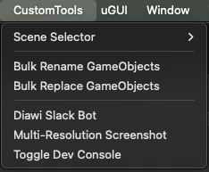
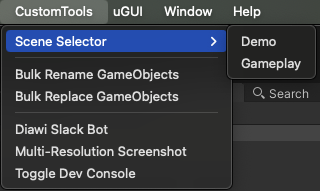
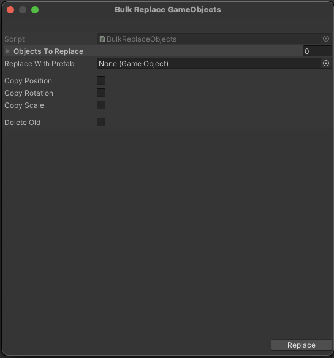
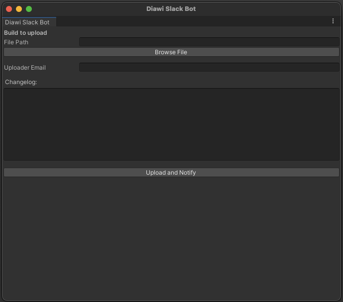
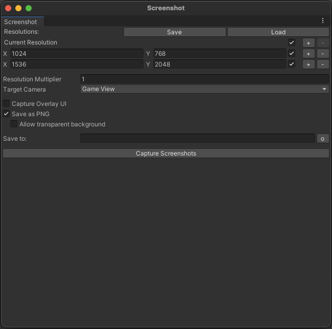

Custom Tools
We have developed a few custom scripts that help with tedious tasks
These scripts are already integrated into the base project
You can access them through the top bar CustomTools

Features
Scene Selector
This tool allows you to navigate to any scene that is included in the build

Bulk Rename GameObjects
Use this tool to rename multiple objects at once. The naming scheme supports prefixes, suffixes and serialization

Bulk Replace GameObjects
Use this tool to replace multiple objects with another prefab. You can copy transform properties and optionally choose to delete the old objects

Diawi Slack Bot
This tool can be used to upload IPA builds to Diawi for testing

Multi-resolution Screenshot
Use this to capture high quality screenshots in multiple aspect ratios

Toggle Dev Console
Helps enable/disable Dev Console in the game